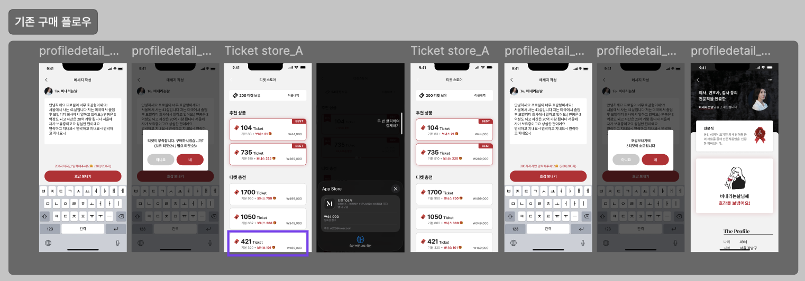
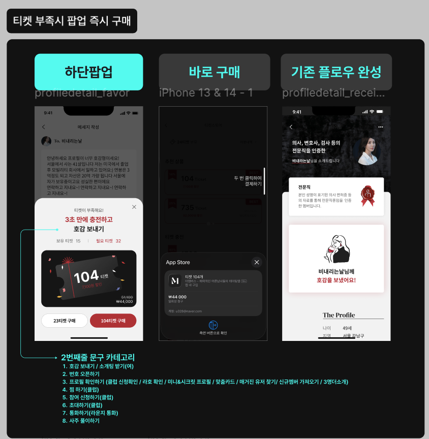
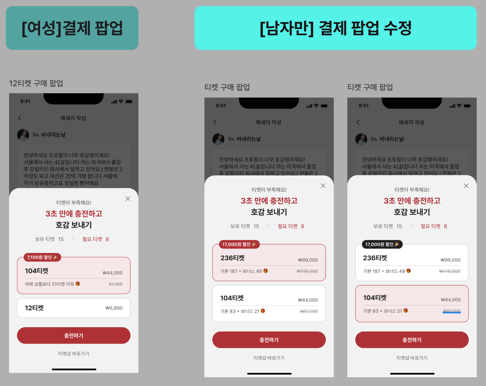
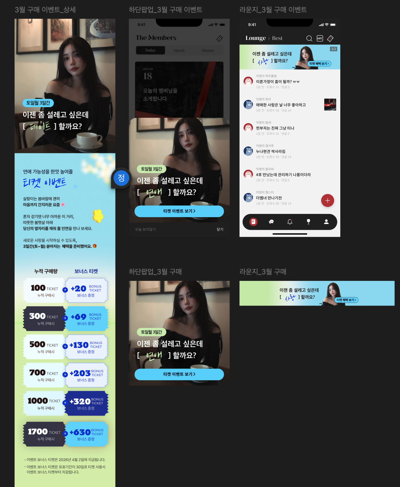
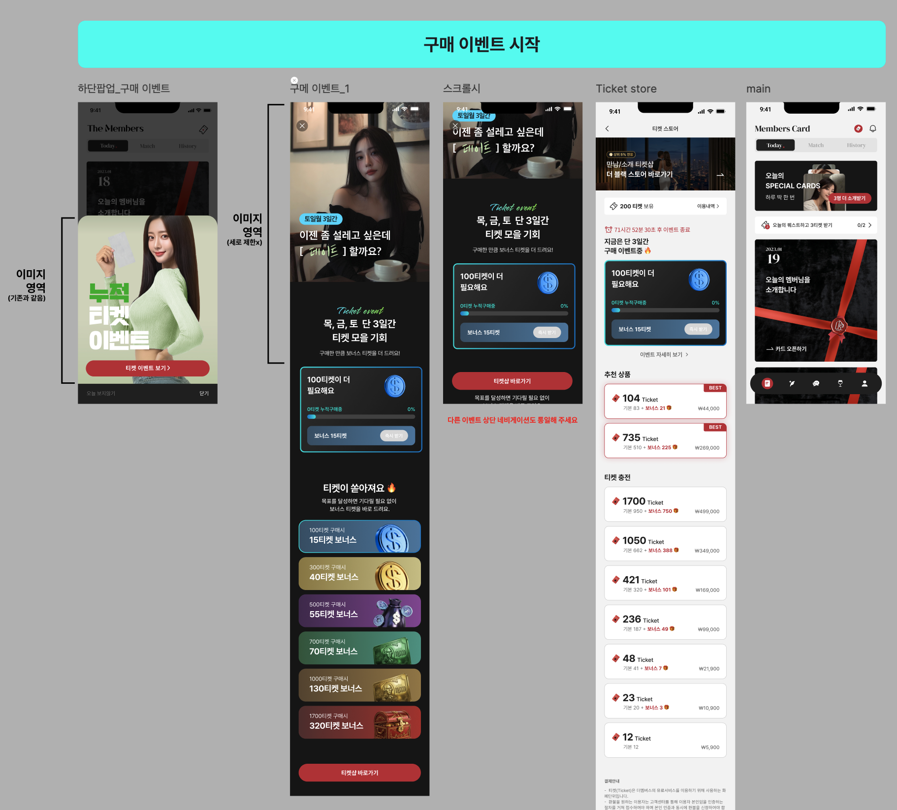
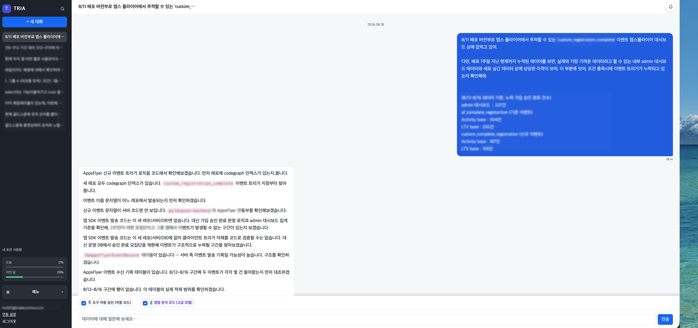
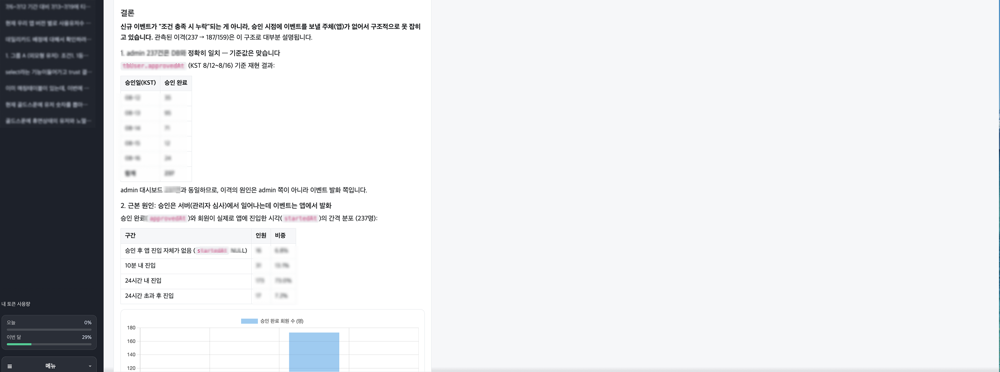

코드로 시스템을 설계하고, 데이터와 AI로 비즈니스를 스케일업하여 프로덕트의 목표 달성에 기여한 PO 정치현입니다.
9년의 여정 속에서, 문제를 해결해야 하는 자리엔 언제나 제가 있었습니다.
123억담당 프로덕트 합산 매출
597%초기 서비스 월매출 성장
CPO現 트리플콤마 프로덕트 총괄
새로운 프로덕트 리더십 기회를 찾고 있습니다
CODE TO IMPACT01 / 15
IDENTITY · 01
기술을 아는 PM만이 만들 수 있는 비즈니스 임팩트
4년의 개발 리드 + Tech PM 경력을 가진 PO에서, 지금은 트리플콤마 CPO로 일하고 있습니다. 엔지니어링 리더십과 비즈니스 오너십을 결합해, 담당 프로덕트(골드스푼+더멤버스) 합산 연 123억 규모 매출 성장에 기여해 온 9년간의 여정입니다.
개발자로서 배운 문제 해결 능력과, 경영진 옆에서 배운 비즈니스 흐름 이해 — 이 두 가지를 결합해, 기술을 비즈니스 성과로 연결하고 있습니다.
4Y + 1.5Y
개발 리드 + Tech PM
PO → CPO
現 프로덕트 총괄
123억
담당 프로덕트 합산 매출
9Y+
테크 백그라운드
IDENTITY02 / 15
TRACK RECORD · 02
가설에 머물지 않고, 직접 실행해 시장과 제품으로 증명했습니다
실전으로 증명한 'Zero to One' 실행력 — 9년을 관통하는 저의 기본값입니다.
// ENGINEERING DNA
문제를 직접 만들어 검증하는 태도
2004–2006
국제 로봇올림피아드 연속 수상. 아이디어를 직접 조립하고 실패하며 검증하는 습관은 학생 시절부터 이어진 저의 기본값입니다.
// 0 TO 1 · 헤디플
1.5개월, 마케팅 0원으로 만든 MVP
오가닉 1,100명
기획, 개발, 배포를 전부 리딩하며 아이디어를 실제 유저 손에 쥐어주는 0 to 1 메이커 경험을 쌓았습니다.
// RUMY · B2B 워크플로우
아날로그 장부를 B2B SaaS 워크플로우로
전국 140개 호텔 B2B 도입
개발을 리딩해 종이 장부의 비효율을 디지털 시스템으로 전환, 실제 산업 현장의 B2B 워크플로우에 도입시켰습니다.
TRACK RECORD03 / 15
01
CHAPTER 1
기술적 제약을 비즈니스 기회로 전환하다
창업 멤버 겸 개발 리드로 제품의 기술 뼈대를 세우고, Tech PM으로서 배포 속도와 수익성을 동시에 극대화한 시기입니다.
ROLE창업 멤버 · 개발 리드 · Tech PM
PRODUCTW클럽 · 파이브(Five)
FOCUS복잡한 로직 설계 · 신규 서비스 0 to 1 런칭
CHAPTER 1 — 창업 & W클럽04 / 15
PRODUCT · 03
3.5개월 만에 신규 서비스 0 to 1 런칭, 고가치 시장을 창출하다
W클럽의 핵심 UX를 유지한 채 구조를 재설계해, 3040·돌싱 타겟을 겨냥한 신규 서비스 '파이브'를 단 3.5개월 만에 기획부터 출시까지 0 to 1로 리딩했습니다. 디자인 시스템과 기능을 모듈 단위로 재구성해 개발 생산성을 20% 끌어올렸고, 별도 마케팅 비용 없이 오가닉 유입만으로 기존 서비스(W클럽) 대비 더 높은 구매력을 가진 유저층을 확보했다는 사실을 데이터로 증명했습니다.
3.5M
기획~출시 소요 기간
+20%
개발 생산성 향상
// ARPU · ARPPU — W클럽 대비 파이브 (index, W클럽=100)
W클럽 (기준)파이브
CHAPTER 105 / 15
PROBLEM SOLVING · 04
이탈하던 유저 퍼널을 복원하고, 자체 결제 모듈로 수익성 제고
대기 유저 1,100명 구출
W클럽의 까다로운 가입 조건 탓에 온보딩 병목에 걸려있던 3040·돌싱 대기 유저 1,100명을 발견했습니다. 이질감 없는 약관 동의와 계정 설정만으로 전환되는 온보딩 플로우를 단 5일 만에 기획‑설계‑배포까지 마쳤습니다.
5일기획~배포
~300명파이브 전환
2,500만런칭 첫 달 매출
카드 스캔 OCR 결제 모듈 자체 개발
외부 PG사 연동에 의존하던 결제 방식의 한계를 발견하고, 카드 스캔 OCR 기반 결제 모듈을 자체 개발해 결제 로직을 단순화했습니다. 그 결과 간편결제 비중이 크게 늘었고 수수료 구조도 절반으로 개선했습니다.
78%간편결제 비중
6%→3%결제 수수료 -50%
+15%전체 매출 상승
CHAPTER 106 / 15
02
CHAPTER 2 · B2B SAAS · 05
파편화된 B2B 데이터를 구조화하고 운영 병목을 자동화하다
바잉스퀘어 CEO Staff로서 글로벌 B2B 공급망의 복잡한 이해관계를 조율하고 시스템화한 시기입니다. 파편화된 글로벌 부티크 카탈로그 데이터를 표준화하고, 자동화 파이프라인으로 수작업 병목을 100% 해소했습니다.
01. 비정형 데이터부티크마다 제각각인 상품 정보 수집
→
02. 표준화Normalization으로 데이터 구조 통일
→
03. 자동화Apps Script + Zapier로 오더 알림 자동화
→
04. 실시간 카탈로그B2B 구매 카탈로그 시스템 구축
글로벌 B2B 카탈로그 표준화
Apps Script · Zapier 주문 자동화
수작업 병목 100% 해소
B2B 스케일업 기반 마련
CHAPTER 2 — 바잉스퀘어 CEO Office07 / 15
03
CHAPTER 3 · HIGHLIGHT
데이터 분석과 AI 기술로 이끈 매출 597% 성장
더멤버스 PO로 합류해 데이터 기반 성장을 증명했고, 지금은 CPO로서 트리플콤마의 프로덕트 전체(골드스푼+더멤버스)를 이끌고 있습니다. '유료 결제 비중'을 북극성 지표로 삼아 모든 이터레이션의 성공을 판단했습니다.
결제 단계를 8→3단계로 단축한 직후 맞닥뜨린 부작용을, 유저 행동 심리를 활용해 오히려 폭발적인 매출 성장의 기회로 뒤집었습니다.

PROBLEM · 빠른 결제의 역설
즉시 구매가 부른 객단가 하락과 피로도
바텀시트 즉시 구매 도입 후, 유저들이 티켓샵에 진입하지 않고 저렴한 추천 상품만 구매 → 객단가 급락
소액 결제로 티켓이 금방 소진돼 바텀시트 노출 빈도가 잦아지며 결제 피로도 급증

ACTION · 디폴트 효과
'선택 후 구매' 방식으로 UI 개편
"유저들은 선택된 기본값을 잘 변경하지 않는다"는 행동 심리를 활용
진입 즉시 특정 상품이 기본 선택(Default)되는 구조로 전환

ACTION · 세그먼트 타겟팅
과금층별 디폴트 상품 차등화
메인 과금층인 남성에게는 고단가 상품을 기본값으로 타겟팅
가성비 위주의 여성 유저에게는 저단가 상품을 기본값으로 유지
Result. 잦은 결제 노출로 인한 유저 피로도를 방어하는 동시에, 전체 유료 충전량이 17.67% 상승하고 고단가(236티켓) 상품 매출이 534만 원에서 1,871만 원으로 250% 폭증했습니다.
47→58.65%
구매 전환율
+250%
236티켓 매출 (534만→1,871만)
+17.67%
유료 티켓 충전량
CHAPTER 309 / 15
DATA-DRIVEN #2 · 07
상관관계 계수 0.85가 지목한 정답, "즉시 보상형 이벤트"
Problem. 이벤트 보상을 1주일 뒤 지급하던 관행이, 유저의 구매 동기를 이벤트 기간 안에 붙잡지 못하고 있었습니다.Discovery. 티켓 구매량과 소모량 사이에 r=0.8485의 강한 상관관계를 확인했습니다 — 구매와 소모는 거의 동시에 일어나는 행동이었습니다.Solution. 보상을 즉시 지급하고, 실시간 프로그레스 바로 달성 과정을 시각화했습니다.Result. 프로모션 종료 직후 발생하던 '매출 절벽' 현상을 완화하며 참여와 구매를 함께 끌어올렸습니다.
// 티켓 구매량 × 소모량 상관관계 (r=0.8485)
이벤트 기간 유저 행동 데이터

AS-IS · 지연 보상
1주일 뒤 지급되는 보상

TO-BE · 즉시 보상
실시간 프로그레스 바 + 즉시 지급
r = 0.8485
구매량‑소모량 상관계수
+63.68%
이벤트 참여 인원
+49.55%
구매량 (22,400→33,500건)
CHAPTER 310 / 15
DATA-DRIVEN #3 · 08
비효율 노출 로직을 제거해 유저 인터랙션 31% 증대
Problem. 호감 획득 확률이 1.43%에 불과한 하위권 남성 유저에게도 동일한 노출 기회가 주어지며, 서버 자원과 여성 유저의 탐색 경험이 함께 낭비되고 있었습니다.Solution. 반응률 데이터를 기준으로 CTR 1.43% 미만의 비효율 노출 알고리즘 모듈을 폐지하고, 노출 로직을 차등화해 상위권 유저에게 노출을 집중시켰습니다.Result. 자원 효율화와 매칭 성공률 개선을 동시에 달성했습니다.
1.43%
폐지 기준 CTR(하위권 호감 획득률)
+31.0%
남성 호감 발송 총량 예측
+32.97%
여성 호감 수신 총량 예측
// 월간 호감(좋아요) 총량 — Before / After 예측
BeforeAfter (남성)After (여성)
CHAPTER 311 / 15
CPO FIRST MISSION · 09
상반기 첫 역성장 -6%, 원인 규명부터 턴어라운드까지
CPO 투입 직후 직면한 첫 매출 하락의 원인을 지표 트리로 역추적하고, 프로덕트 재설계를 통해 즉각 정상화했습니다.
01 · 위기 진단 (PROBLEM)
상반기 첫 역성장 -6%
서비스 출시 이래 첫 매출 하락 발생
당시 단행된 '스푼 가격 인상'과 '신규 기능 배포'가 겹쳐, 명확한 원인 분리가 시급한 상황
02 · 가설 검증 (ANALYSIS)
지표 트리 역추적으로 원인 지점 특정
매출을 MAU · ARPU · 객단가 · 구매건수 · 유저당 구매건수로 분해해 역추적
가격 인상에 따른 이탈(주문건수 급감) 가설 기각 — 구매건수 유지 확인
핵심 원인으로 '객단가 -7% 급감' 지점 특정
03 · 원인 규명 (ROOT CAUSE)
신규 기능 'TRUST'의 역설적 결함
TRUST가 최종 전환(Final Conversion)까지의 소진 비용을 약 50% 단축시키는 성공
역설: 전환 효율이 과도하게 높아지며 유저당 결제 총액(객단가)을 잠식(Cannibalization)
UX 효율화 ↔ 객단가 잠식의 딜레마 발견
04 · 정상화 실행 (ACTION & RESULT)
노출 범위 축소 + BM 재설계
TRUST 노출 범위 및 전환 뎁스(Depth) 축소 조정
기능 소진 단가 상향 및 패키지 가격 구조 최적화 재설계
객단가 즉각 복구 → 상반기 매출 V자 턴어라운드 완료
-6%
상반기 최초 매출 역성장
-7%
객단가 급감 (핵심 원인)
-50%
TRUST 최종 전환 소진 비용
V자 회복
객단가 복구 · 매출 정상화
CPO의 핵심 역할
단순 UI 최적화나 롤백이 아닌, '지표 진단 → 딜레마(UX 효율화 vs 객단가 잠식) 규명 → BM 재조정'까지 제품 수익성을 방어한 문제 해결 전 과정을 주도했습니다.
CHAPTER 312 / 15
AI & PRODUCT LEADERSHIP · 10★ CORE
팀의 기술 세션 아이디어를, 정식 AI 에이전트 'TRIA'로 구축하다
복잡한 데이터를 사람 대신 AI가 먼저 이해하고 답하게 만들자는 문제의식에서, 기술세션에서 나온 팀의 의견을 바탕으로 온톨로지/LLM 기술을 활용해 자연어로 사내 데이터를 조회하는 AI Agent TRIA를 설계하고 정식 오픈했습니다. SQL 없이 채팅으로 질문하면 골드스푼 데이터를 조회·분석해주고, 결과를 대시보드로 저장해 언제든 다시 볼 수 있습니다.
BEFORE
수일을 기다리던 데이터 확인
데이터 하나를 확인하려면 개발팀에 티켓을 발행하고 수일을 대기해야 했습니다.
AFTER — TRIA
채팅으로 즉시 묻고 즉시 답을 받다
채팅만으로 즉시 데이터를 추출·분석하고, 결과는 대시보드에 저장해 언제든 다시 봅니다.

01 · 자연어로 질문
비개발 직군도 채팅으로 바로 질문

02 · AI가 원인 분석 & 결론 도출
근본 원인까지 구조화된 답변 제공
팀 문화(기술세션)를 만들고 거기서 출발한 아이디어를 실제 AI 제품으로 완성시켰습니다.
CHAPTER 3 — CORE13 / 15
SUMMARY · 11
"복잡한 문제를 풀다 보니, 역할이 자연스럽게 넓어졌습니다"
START — 창업 & W클럽
Dev Lead
복잡한 로직을 빈틈없이 구현하는 아키텍처 능력을 습득했습니다.
PROCESS — 바잉스퀘어
CEO Staff
B2B 비즈니스 이해도와 운영 프로세스 자동화 능력을 확보했습니다.
NOW — 트리플콤마
CPO
AI/데이터 기반 123억 규모 매출 스케일업과 오너십을 증명했습니다.
9년 동안 직군의 이름은 바뀌었지만, "어떻게든 해결해낸다"는 본질은 같았습니다.
SUMMARY14 / 15
NEXT STEP · 12
AI와 데이터로 비즈니스 임팩트를 만드는 다음 프로덕트에 합류하겠습니다
개발자와 시스템을 짓고, B2B 영역에서 자동화를 구축하며, CPO로서 AI 에이전트 런칭과 123억 프로덕트의 매출 성장을 직접 이끌었습니다.
제가 가진 0 to 1 프로덕트 빌딩 경험, 기술과 복잡한 로직에 대한 이해도, 데이터 기반 오너십을 바탕으로 다음 프로덕트의 성장을 함께 만들어가겠습니다.